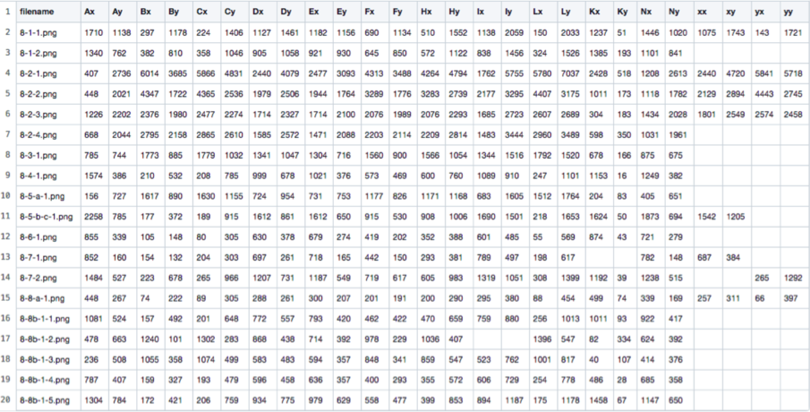
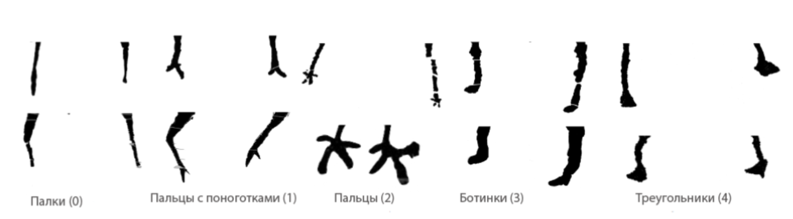
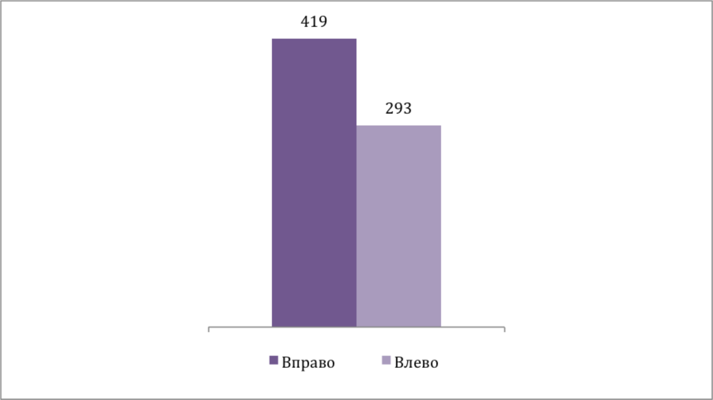
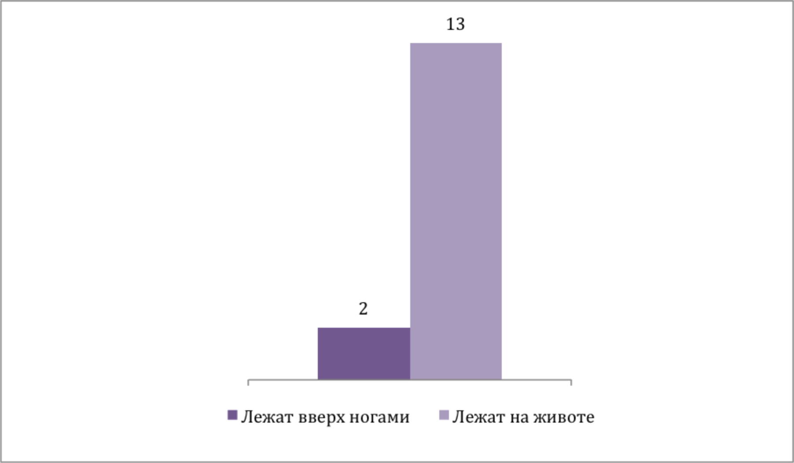

Подробнее о ходе исследования можно прочесть в нашей статье
По результатам экспедиций разных лет были выделены 12 скоплений, содержащие 350 поверхностей с петроглифами. Все поверхности сохранены в виде прорисовок (файлы JPEG и TIFF). 350 поверхностей содержат изображения 723 оленей (некоторые из изображений спорные, но похожи на оленей). Выражаем огромную благодарность за научную консультацию и предоставление материалов Елене Сергеевне Левановой (канд. ист. наук, заведующая центром палеоискусства ИА РАН) и Юрию Михайловичу Свойскому (руководитель лаборатории RSSDA).
Визуализация распределения изображения оленей относительно количества скоплений
Визуализация распределения изображения оленей относительно количества скоплений
В попытках найти ключи к анализу пегтымельских петроглифов наша команда решила сфокусировать исследование именно на северных оленях, так как фигур оленей больше, чем всех остальных вместе взятых (включая людей). Помимо этого, стиль изображения оленей где-то пересекается, где-то различается. Очевидно, что олени несут в себе много информации, которая может стать ключевой в дальнейшем изучении пегтымельских петроглифов и которая может позволить более точно связать пегтымельский памятник с какой-либо из археологических культур Севера.
1. Пронумеровали всех оленей, используя следующий формат записи 4.IV-10-3, где 4.IV – номер скопления, 10 – номер поверхности, 3 – номер оленя по порядку. Перед римскими цифрами мы использовали арабские для сортировки. В дальнейшем файлы PNG с каждым отдельным оленем мы именовали по формату 4-10-3. Иногда встречается запись формата 9-2-1-1 или 8-5-a-1 (скопление-поверхность-часть поверхности-номер оленя).
2. Вырезали отдельно изображения каждого оленя, скорректировали размеры изображений.
Результат препроцессинга изображений
3. Записали всех оленей в таблицу признаков по бинарному типу, где отмечали 1 или 0 целостность изображения, ориентацию (влево или вправо), позу (лежащий или стоящий), наличие рогов и их признаки, наличие ушей, бородки, ног, хвоста. Рога могут иметь следующие признаки: утолщения, ответвления, направление по горизонтали или вертикали, прямая или полукруглая форма. Ноги характеризуются количеством, наличием изгиба в колене передней и задней ноги, типом копыт. Копыта представлены четырьмя вариантами: «пальцы», «пальцы c явно выраженными поноготками» и собранные воедино в форме «ботинок», «палок» и «треугольников». В случае пальцев добавляется признак их количества. Есть среди них и признаки, относящиеся ко всему скоплению и указывающие на контекст: олень запряжен или проткнут гарпуном или копьём, изображен в многофигурной композиции, изображен среди прочих персонажей.
4. Опираясь на теорию А.Я.Шера, мы сформулировали ряд геометрических признаков, базирующихся на пропорциях оленей, и подготовили специальное ПО для дальнейшей разметки по базовым точкам для описания контуров фигур оленей. Результатом становится таблица с набором координат каждой точки для анализа. Эта работа сейчас продолжается первым курсом нашей магистратуры.
Процесс нанесения меток координат в среде Python
Получившаяся таблица с метками-координатами
5. Попробовали с помощью компьютерного зрения «дорисовать» отсутствующие части в прорисовках (выбоины, сколы).
Чрезмерно размытое изображение, Исходное изображение, Оптимальный вариант
6. Проверили методы геометрической морфометрии для описания контуров брюшек оленей (на 698 фигурах, включенных в выборку). Метод позволил выявить сходные по форме группы оленей. В результате был получен график с иерархической древесной структурой, где выявились около 15-18 кластеров близких форм.
Визуализация дерева форм формата PhyloXML в веб-приложении ITOL. Выделяется 15-18 ветвей-кластеров по формам туловища
Пример аннотации ветви, где 414 - id фигуры, а branch length - длина ветви
Частичная интерпретация древовидного графика
7. Также мы использовали нейросеть Tensorflow Inception V3 для кластеризации признаков оленей (полученное нейросетью латентное пространство признаков подвергалось снижению размерности алгоритмом umap). Результат этой кластеризации доступен по ссылке на визуализацию и группирует оленей по технике исполнения и сохранности петроглифов. Для обоих методов из выборки были убраны краевые случаи, количество оленей составило 667 штук.
Краевые случаи, удаленные из выборки для обучения нейросети
Распределение по типу копыт (количество оленей с тем или иным видом копыт)
Типы копыт. Каждый тип копыт также, скорее всего, указывает на определённый сезон, например, зимой для препятствия скольжению оленьи копыта покрываются плотным слоем волос, что может быть иллюстрировано копытами типа «ботинки» и «треугольники».
Типы копыт
В какую сторону смотрят олени?
Положение оленей (положение вверх ногами может говорить об умершем животном)